提出 C3K2-CF 轻量化模块、FFEN 特征融合增强网络、FFF 特征聚焦融合模块与 TADDH 任务对齐动态检测头，在 PKU-Market-PCB 数据集上 mAP@0.5 达 98.6%，参数量减少 47.2%。
以 ConvFormer 令牌混合器重构 C3K2，参数量下降 20.2% 的同时 mAP@0.5:0.95 提升 4.8 个百分点，实现轻量化与小目标感知的双向优化。
特征融合增强网络对齐、拼接与残差通路保障跨尺度信息完整；特征聚焦融合模块以多感受野深度卷积聚焦融合多尺度上下文。
共享卷积与任务对齐学习打通分类-定位交互通道，参数量仅 1.33M 即取得 98.6% 的 mAP@0.5。
mAP@0.5 达 98.6%，mAP@0.5:0.95 提升 7.2%，参数量和计算量分别减少 47.2% 和 16.9%。
本文目标：在实现轻量化的同时，从骨干、Neck 到检测头实现全链路协同优化，兼顾高精度与实时性。
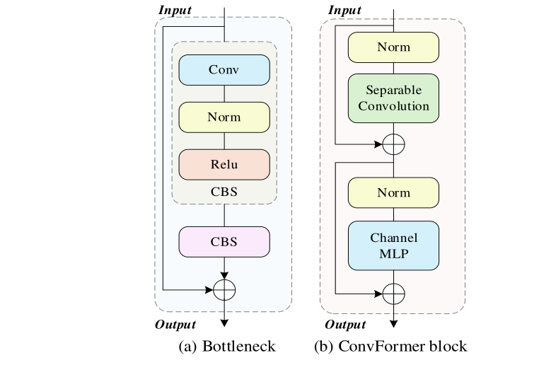
Parmdsc = K2 × C + C × N | Calcdsc = K2 × W × H × C + W × H × C × N
压缩比 = 1/K² + 1/N，其中 N 为输出通道数，K 为卷积核尺寸，C 为输入通道数。
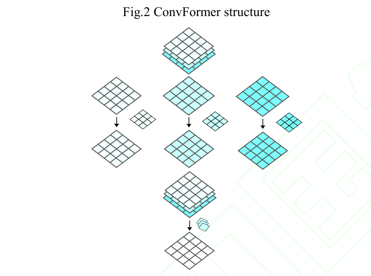
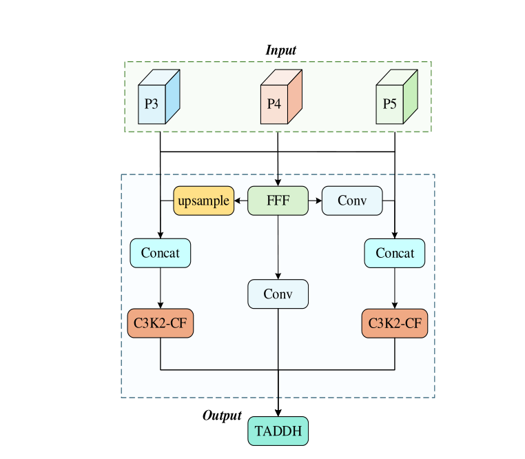
fdw = xcat + ∑k∈kernel_sizes dw_convk(xcat)
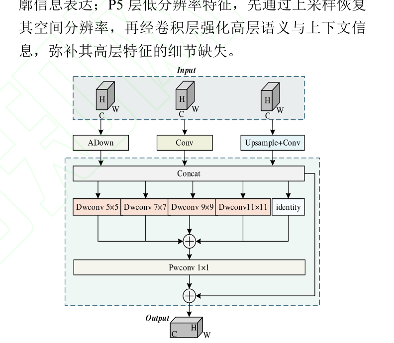
Xtask = ∑k=1N wk · Xinterk， w = σ(fc2(σ1(fc1(xinter))))
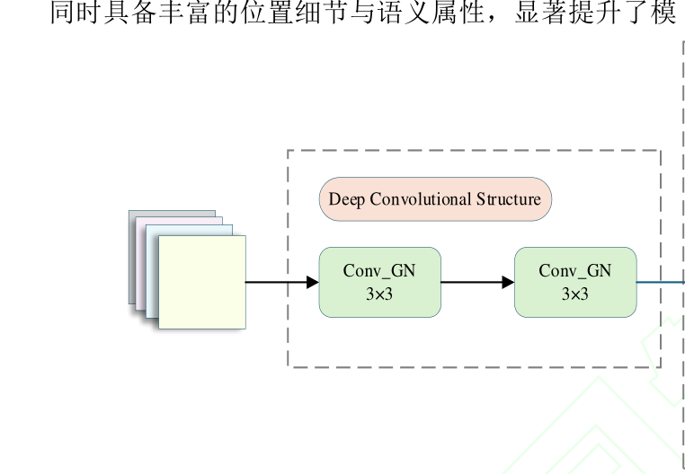
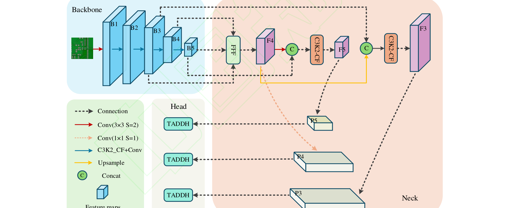
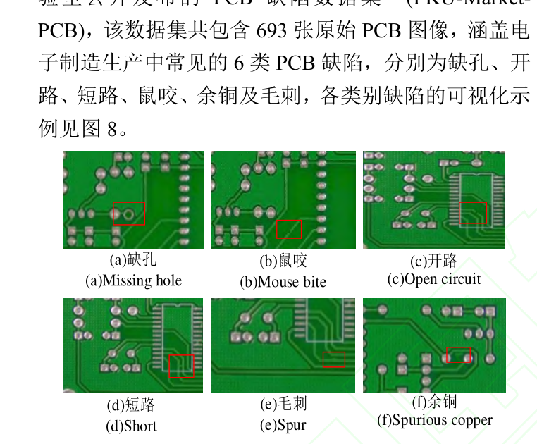
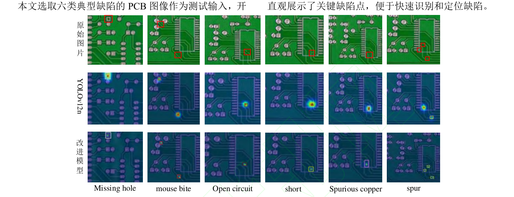
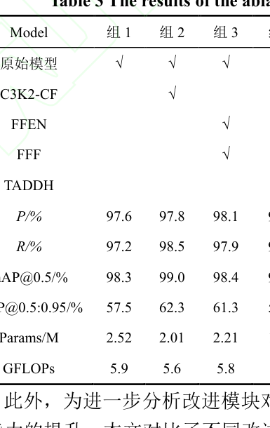
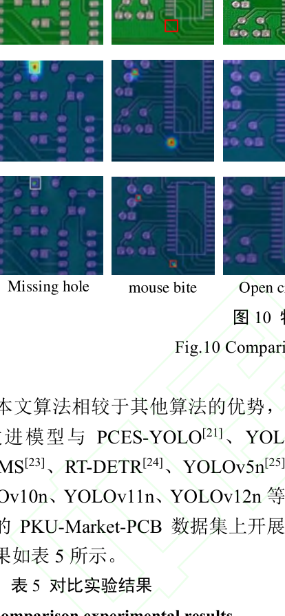
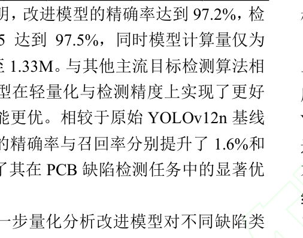
以深度可分离卷积令牌混合器重构 C3K2，参数量下降 20.2% 的同时 mAP@0.5:0.95 提升 4.8 个百分点，实现轻量化与小目标感知双向优化。
面向 Neck 跨尺度细节丢失设计 FFEN 与 FFF，以对齐-拼接-残差通路和多感受野深度卷积保留浅层弱特征，短路、开路等微小目标增益最大。
将任务对齐学习引入动态检测头，以层注意力与可变形卷积打通分类-定位信息交互，参数量仅 1.33M 即取得 98.6% 的 mAP@0.5。